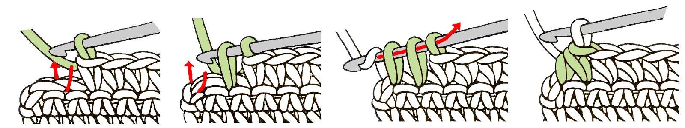
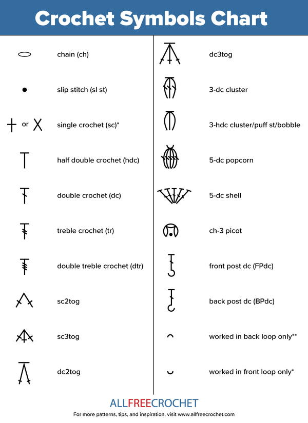

Understanding Decreases
Decreases reduce the number of stitches in a row and help shape the project inward.
Example Decrease:

- sc2tog – single crochet two stitches together.
- dc2tog – double crochet two together.
Reading Crochet Patterns
Crochet patterns use abbreviations to make instructions shorter and clearer.

Common Abbreviations:
- sc – single crochet
- hdc – half double crochet
- dc – double crochet
- st – stitch
- rep – repeat
Sample Pattern Line:
Row 3: *2 sc in next st, sc in next 3 sts* repeat 3 times.